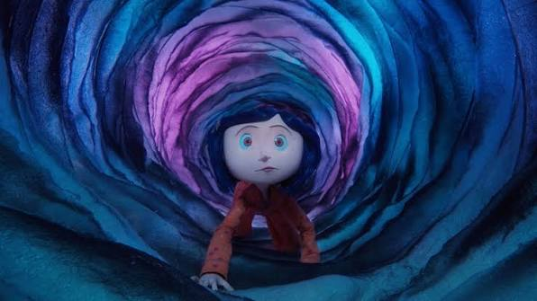

Sets artesanales: más de 150 escenarios construidos.
Marionetas: Coraline tuvo 28 versiones de rostro.
Innovaciones: uso de impresoras 3D para expresiones faciales.
| Elemento | Detalle | Ejemplo |
|---|---|---|
| Sets | Hechos a mano, más de 150 escenarios | Casa de Coraline |
| Marionetas | Intercambio de piezas faciales y corporales | Coraline, Otra Madre |
| Tecnología | Uso de impresoras 3D para expresiones | Rostros expresivos |
| Equipo | Más de 300 artistas y técnicos | Laika Studios |
